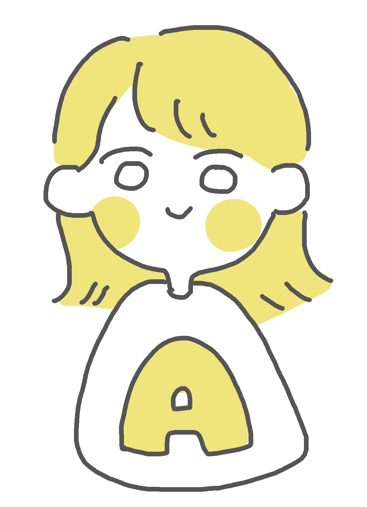
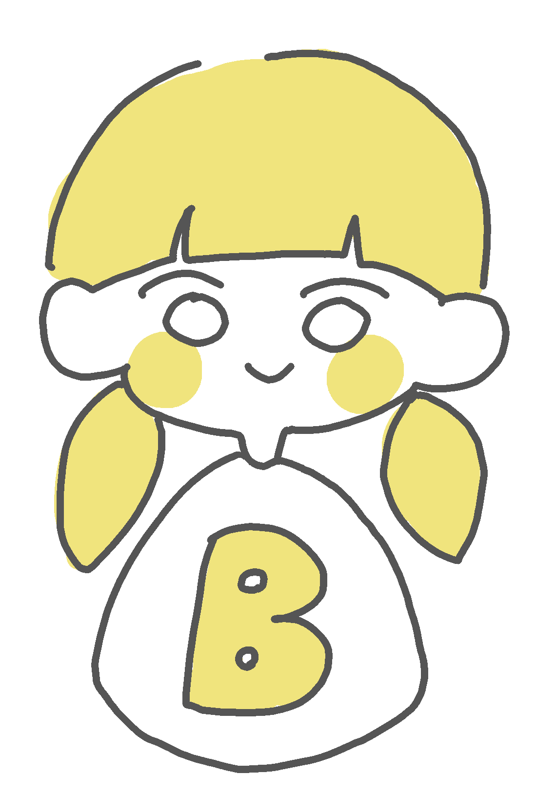
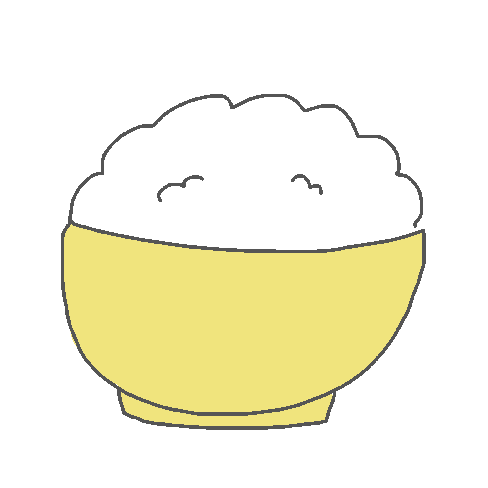
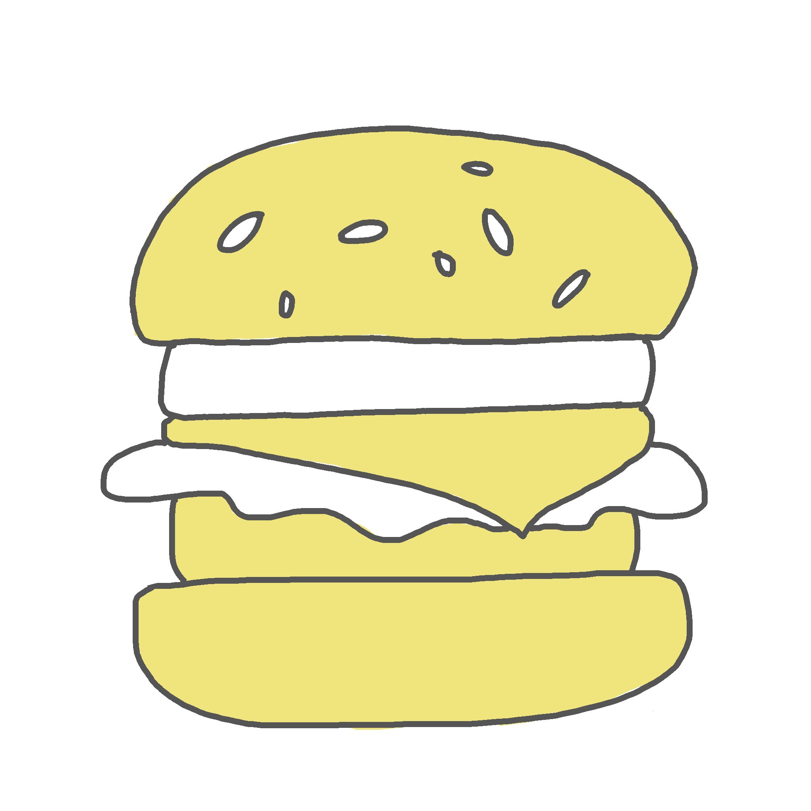
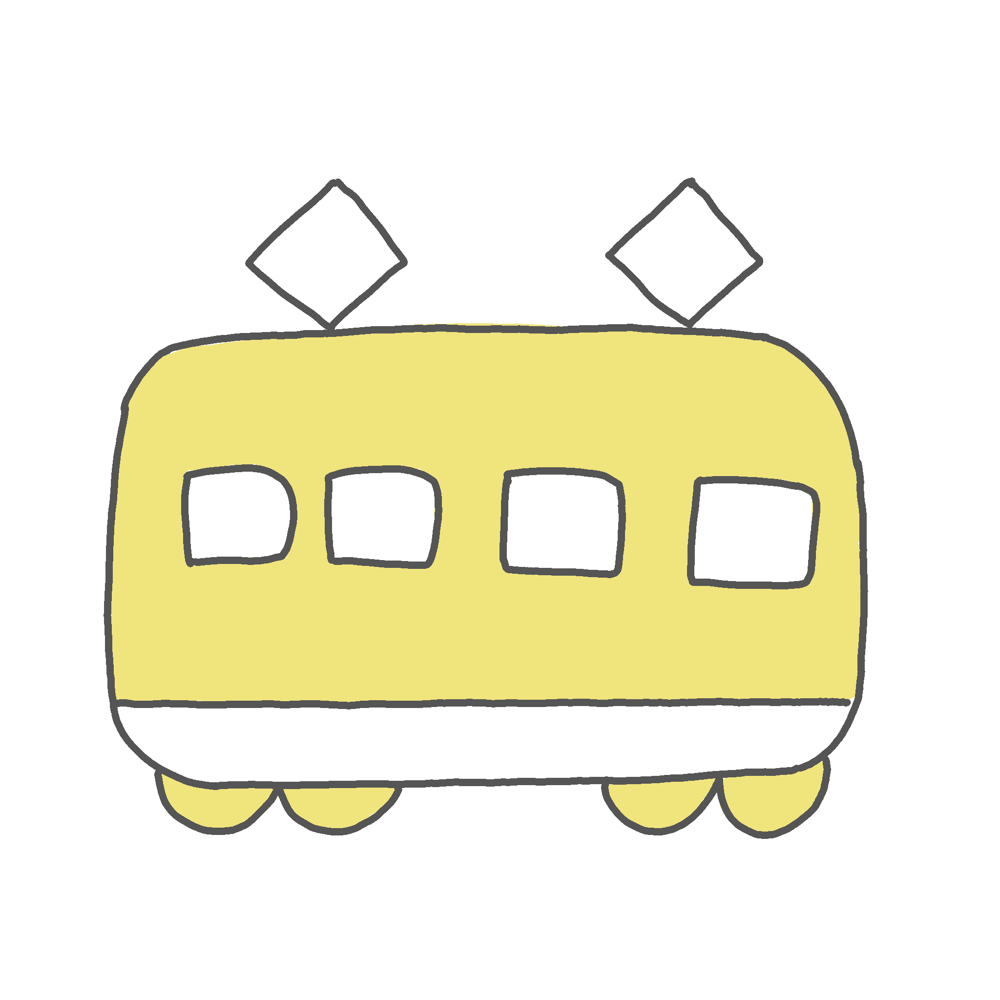
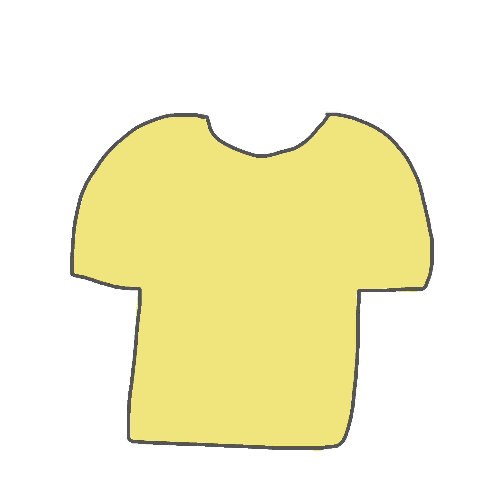

この月のふたりの支出の合計は、
Aさん
51,945
円
Bさん
65,691
円
節約と聞いて、
皆さんは何を思い浮かべますか？
面倒のなもの、ストレスになるもの。
そう思い中々行動に起こせない人が
多いかもしれません。
このサイトでは「節約って面倒」を
「少し軽くするヒント」
を紹介します！
ABOUT

ごくごく普通の大学生
自他ともに認める節約家

大学生になってから、特に節約を意識するようになる。毎日開くアプリは「家計簿」と「ポイ活アプリ」。我慢しすぎる節約はしたくないけれど、好きなことは思いきり楽しみたい。旅行、友達、美味しいご飯など、経験にお金を使いたいタイプ。日常を少し工夫しながら節約している。
If it were me?
How defferent is it?
大学2年生で、１人暮らしをしている
ふたりの普段の出費を比較してみました。
Aさん
「今月も意識できた！」

Bさん
「あまりできなかった...」


食費
Aさん
コンビニ５回
（１回１個購入）
7,886
円
Bさん
コンビニ９回
（１回２•３個購入）
12,554
円

外食費
Aさん
外食６回
（週１•２回）
8,458
円
Bさん
外食９回
（週２•３回）
12,430
円

交通費
Aさん
１駅歩いた日が
１回ある
3,778
円
Bさん
歩いたことは
１回も無い
4,134
円

衣服
Aさん
買う前に１日置いた
0
円
Bさん
勢いですぐ買った
2,990
円
遊
Aさん
カラオケは
朝に行った
5,690
円
Bさん
カラオケは夜に
２回行った
7,450
円
この月のふたりの支出の合計は、
Aさん
51,945
円
Bさん
65,691
円
差額は
13,746
円
半年続くと、差額は
82,476
円
今回比べてみて、
小さな工夫の積み重ねが意外と
大きな差になることがわかりました。
でも、全部を一気に変える必要はありません。
まずは、「これならできそう！」と
思ったことから試してみませんか？